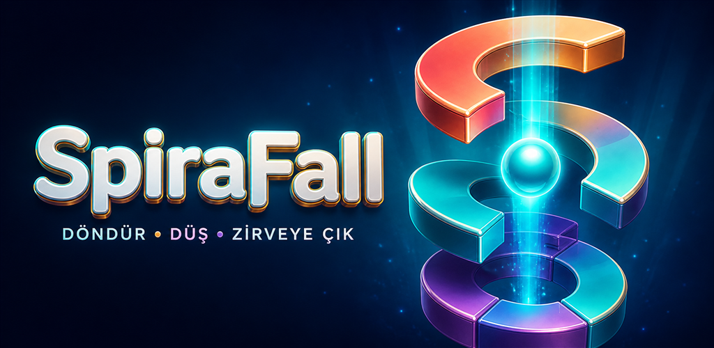

SpiraFall nasıl bir oyun?
SpiraFall, mağazada Sarmal Düşüş adıyla da anlatılan, tek parmakla kontrol edilen bir 3B arcade oyunudur. Yatay sürükleme kuleyi döndürür; amaç, zıplayan küreyi platform boşluklarıyla hizalayarak aşağıya ilerlemektir. Kırmızı alanlar tehlike olarak tanımlanır.
Mağaza açıklamasında altın toplama, bölüm tamamlama ödülleri, farklı görünümler ve lig hedefleri bulunur. Art arda başarılı geçişlerin Sarmal Darbe’yi hazırladığı belirtilir. Bu rehber belirli bir katmanda kesin sonuç veya gizli bir kısayol vadetmez.
Ürün bilgisi: Google Play mağaza kaydı . Kontrol: 26 Ekim 2026. Mağaza açıklamaları zamanla değişebilir.
İlk denemede hızdan önce ritim
Aşağıdaki yöntem bir oyuncu çalışma önerisidir; oyunun zorunlu bir kuralı değildir. Amaç, başarısız bir denemeyi anlaşılır küçük parçalara ayırmaktır.
- Önce yakın platformu oku. Kürenin bir sonraki iniş yerini ve güvenli boşluğu belirle. Uzaktaki bir hedefe odaklanırken hemen altındaki tehlikeyi gözden kaçırma.
- Küçük hareketlerle hizala. Uzun, keskin sürüklemeler yerine kısa düzeltmeler dene. Boşluğu geçiyorsan bir sonraki denemede hareket mesafeni azalt.
- Bir sonraki inişe alan bırak. İlk boşluğu bulmak tek başına yeterli olmayabilir. Alt platformu görebildiğin ölçüde sonraki hizalamayı da düşün.
- Her denemede tek şeyi değiştir. Hem hızı hem yönü hem zamanlamayı aynı anda değiştirmek, neyin işe yaradığını anlamayı zorlaştırır.
Takıldığında hatayı ayır
Boşluğun iki yanına gidip geliyorsan
Art arda büyük düzeltmeler yapıyor olabilirsin. Parmağını daha kısa mesafede hareket ettir ve bir düzeltmenin sonucunu görmeden ters yöne sertçe dönme.
Kırmızı alanı geç fark ediyorsan
Bakışını yalnızca küreye kilitlemek yerine platformdaki güvenli ve tehlikeli alanları birlikte takip et. Kısa bir ara vermek, aynı acele hareketi sürekli tekrarlamaktan daha yararlı olabilir.
Oyun akışı takılıyorsa
Performans sorunuyla zamanlama hatası aynı şey değildir. Uygulama sürümünü ve cihaz durumunu kontrol etmek için mobil destek rehberine geç. İlerlemeni koruyup korumadığını bilmeden uygulama verilerini silme.
SpiraFall hakkında sık sorulanlar
Oyunu bu sitede oynayabilir miyim?
Hayır. Bu sayfa tanıtım ve rehber içerir. Android uygulamasına resmi Google Play bağlantısından ulaşabilirsin.
Reklam veya ödüllü video var mı?
Mağaza kaydı reklam içerdiğini ve isteğe bağlı ödüllü videoları belirtir. Web sitesinin bu önizlemesinde reklam gösterimi yoktur. Uygulama içindeki davranış sürüme ve bağlantıya göre değişebilir.
Kaç bölüm var?
26 Ekim 2026 kontrolünde mağazanın yenilikler bölümünde 300, uzun açıklamasında 100 bölüm yazıyordu. Bu iki kayıt tutarlı olmadığı için burada kesin bir toplam vermiyoruz. Kurulu sürümün bölüm haritasını esas al.
Bir görünümü seçmek oynanışı değiştirir mi?
Mağaza görünümleri ve skin seçimini doğruluyor; tüm görünümlerin fiziksel avantaj sağladığını doğrulayan bir bilgi yok. Bu nedenle görünüm seçimini kazanma garantisi gibi değerlendirmiyoruz.
Bir sonraki düşüşü sen planla.
Önce kontrolü tanı, sonra kendi oyun ritmini geliştir.
SpiraFall’ı Google Play’de görüntüle Resmi destek sayfası